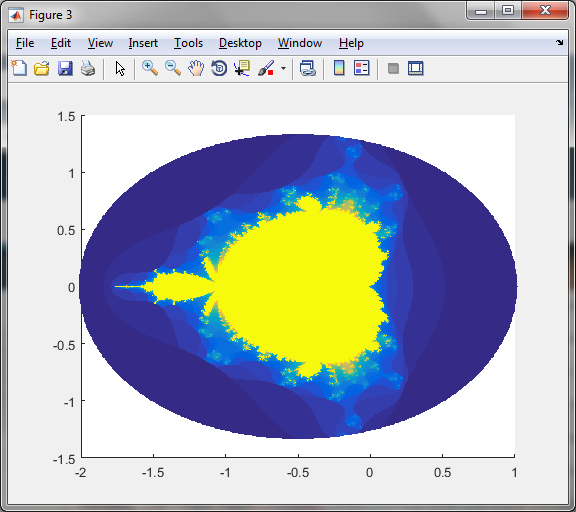

These python programs record values in the mandelbrot set, julia set, and some variants (like the manowar and quartic mandelbrot fractals),
as well as how long "escaped" values took to fall out.
From there, I plotted the points from the .csv file in Matlab, with the third variable (how long to escape) indicated by color.
Standard mandelbrot (z = z^2 + c, c representing the point):
From this point on, I started not recording points which escaped too quickly(within first or second iteration).
That's why the matlab figures are rounded.
Quartic mandelbrot (z = z^4 + c, c representing the point):
Octic mandelbrot (z = z^8 + c, c representing the point):
Manowar (z(sub k+1) = z(sub k)^2 + z(sub k-1) + c):

Now, the Julia set. These are calculated differently, with c constant and the initial z being the point
Calculated using c = [0.56667, -0.5] and z = z^2 + c:
The Butterfly (not its official name, just what I'm calling it), calculated with z(sub k+1) = z(sub k)^2 + c + P·z(subk-1); c = 0.56667, p = -0.5